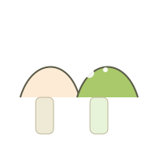
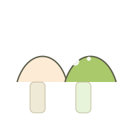

Playlist recomendada
- «Lorem» — Lorem
- «Lorem» — Lorem
- «Lorem» — Lorem
Un rincón para descubrir sonidos y páginas con alma
Bienvenidos a este lugar de recomendaciones musicales y literarias. La estetica es mero gusto personal, no se dejen engañar, en su mayoria encontraran musíca grunge, rock y hasta regional mexicano y libros de todo tipo.
Cada semana enlistamos descubrimientos de generos diversos
Reseñas, fragmentos y descubrimientos literarios.
Una novela íntima que mezcla partituras y cuadernos olvidados; perfecta para quien busca lecturas abrazables.
Ensayos y relatos cortos que invitan a escuchar el mundo natural como una partitura viva.
Crónicas sobre discos, libros y la nostalgia de lo analógico; ideal para tardes de lectura acompañado de música.
La brújula de hojas — una novela íntima que mezcla partituras y cuadernos olvidados; perfecta para quien busca lecturas abrazables.
Si te gustan la música y los libros , deja tus datos y te enviaremos el resumen semanal. Puedes responder al email con sugerencias y puede que un día las publiquemos en el vlog.
 
